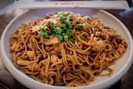

Go Back to Recipe Page
Spicy Garlic Noodles with Chicken

Easy and healthy Spicy Garlic Noodles that are quick, easy, and delicious!
This recipe makes 5 plates.
(850 calories, 10g fat, 27g carbs, 67g protein) per plate
Ingredients
- Heart of Palm 24 oz
- 3 lb Chicken Thigh
- 2 Bags of Broccoli Florets
- Pinch of Salt, Pepper, Onion Powder, Garlic Powder, an Ginger for the chicken
- 2 Tbsp Oil
- Soy Sauce Mixture
- 4 Tbsp Soy Sauce
- 2 Tbsp Fish Sauce
- 4 Tbsp Sake or Water
- 2 Tbsp Honey
- 3 Tbsp Red Pepper Flakes
- 3 Tbsp Garlic
How to prepare:
- Split sauce in two
- Cut chicken into 1 inch cubes and season with spices
- Cook chicken on large skillet with oil
- When chicken is done cooking add half sauce mixture
- Add broccoli and mix well
- Add pasta and remaining half of soy sauce mixture
- Allow mixture to boil to thicken sauce for 5 minutes
- Turn off heat while continuing to mix
- Allow to cool before separating into tupperware dishes